WHAT YOU ARE SEEING
Overview: a visual record of separate research studies
The Oct 3 cohort contains four sources: 26100301–26100304. The Court checkpoint and Court-admitted spatial map belong to a separate Aug 7 source, 260807-92. The Oct 13 ablation is another archived table-derived comparison.
Editorial GT is a human-edited timeline, not physical LIVE/DEAD or Hit truth. Click any image to open its original full-resolution file. Every figure has source, model/stage, experiment state, and limits recorded in the evidence manifest.
SOURCE COVERAGE
Start and middle frames from real videos
These are distinct frozen model frames. The final mapped sample appears with the failure examples below.

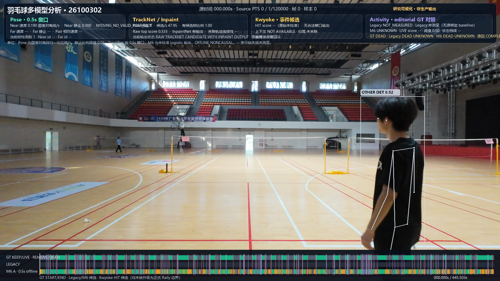

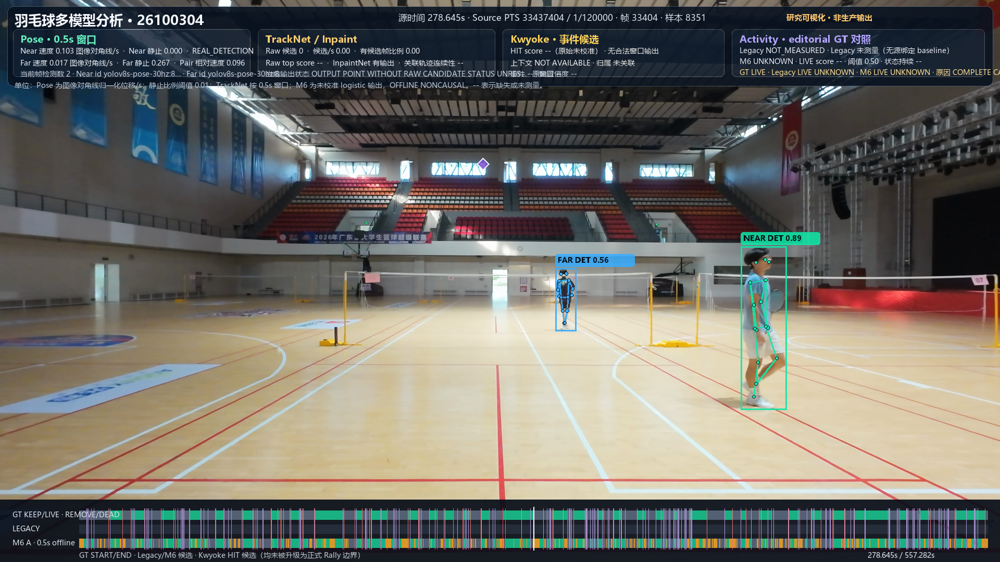
EVIDENCE TYPE A · VIDEO AND COURT
Court geometry on a real source frame
This Aug 7 checkpoint is shown separately from the Oct 3 four-source M6 study.
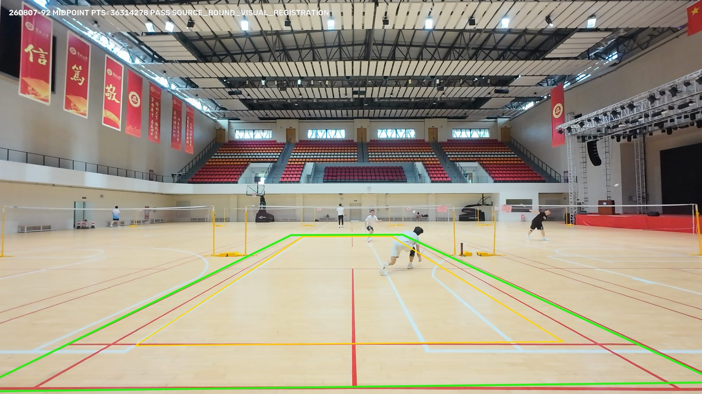
automatic_court_evidence_v1, midpoint geometry PASS and source-bound registration PASS. This checkpoint does not certify all-frame stability, Rally, KeepTimeline, or export.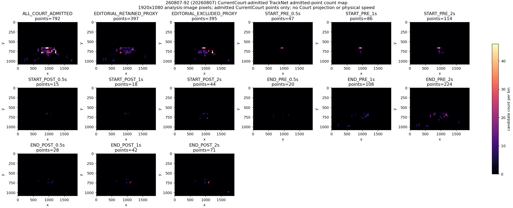
EVIDENCE TYPE B · PLAYER AND POSE
Player and Pose: boxes, skeletons, and experimental Near/Far slots
Near/Far describe image-y pose slots in this research renderer. They are not persistent player identities or Court-side roles.
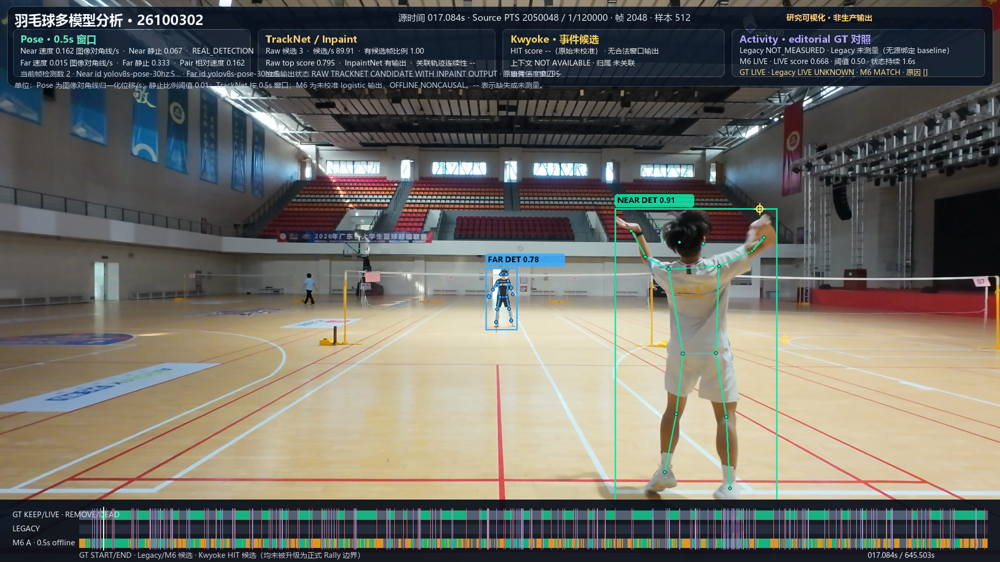
M6_POSE_MOTION_PLUS_TRACKNET, frozen zero-shot parameters with no target-GT tuning; editorial GT LIVE / M6 MATCH. Both pose slots and TrackNet candidate summary are visible.EVIDENCE TYPE C · TRACKNET CANDIDATES
Raw points, frame overlays, and a separate aggregate map
The four-source plot below is the original high-resolution raw-candidate figure. Its points are unassociated and are not a shuttle trajectory.
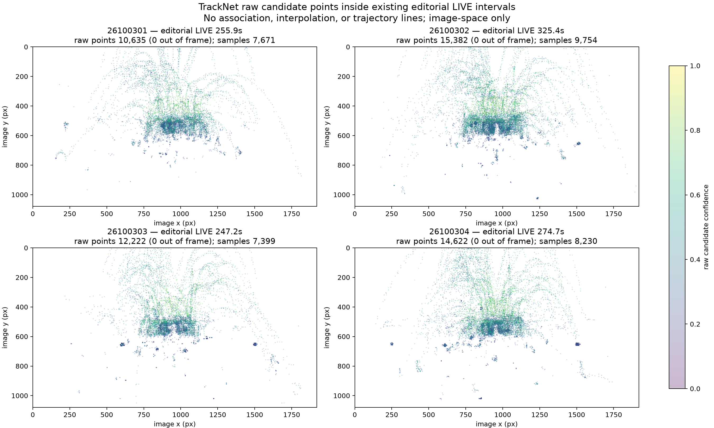

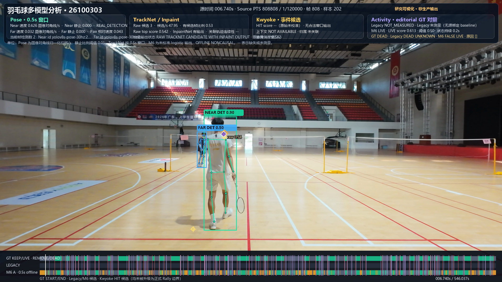

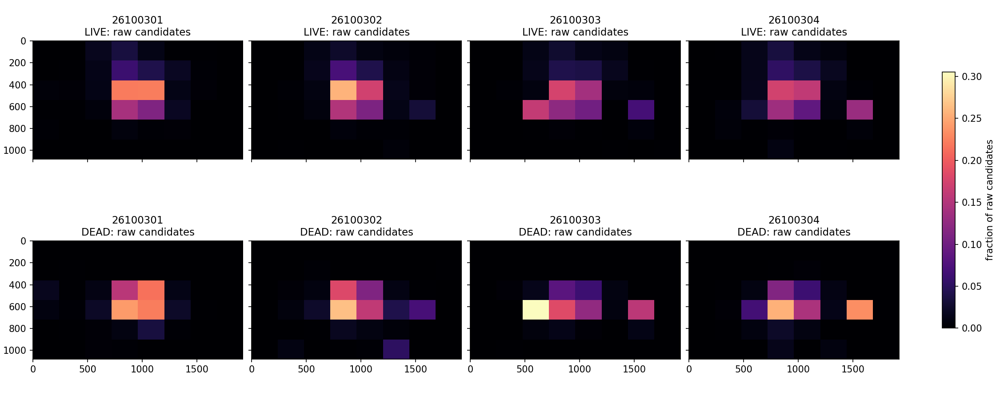
26100302-K0001 is a task-forward HIT_CANDIDATE with physical_hit_verified=false. GT and M6 state are DEAD/MATCH; the frame reports an uncalibrated Hit score and no legal window output.EVIDENCE TYPE D · STATES AND BOUNDARIES
Timeline: LIVE, DEAD, UNKNOWN, and START/END evidence
These report figures use different offline model arms. Their captions preserve that distinction.
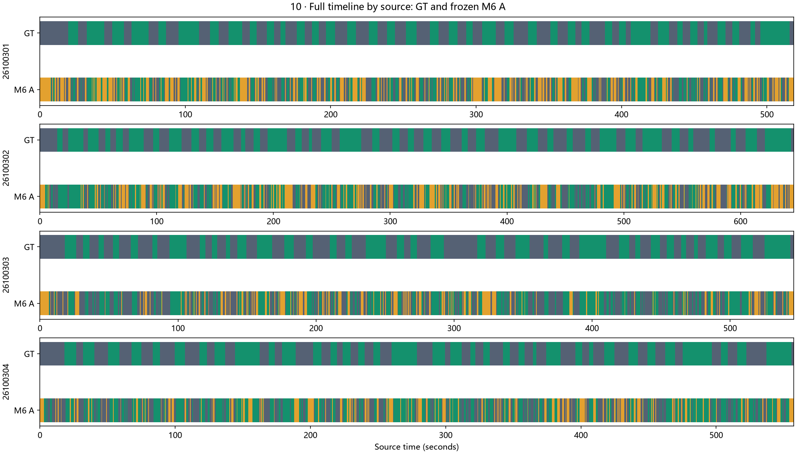
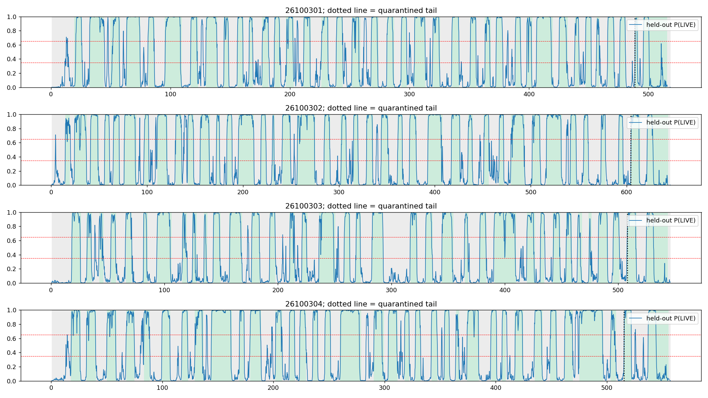
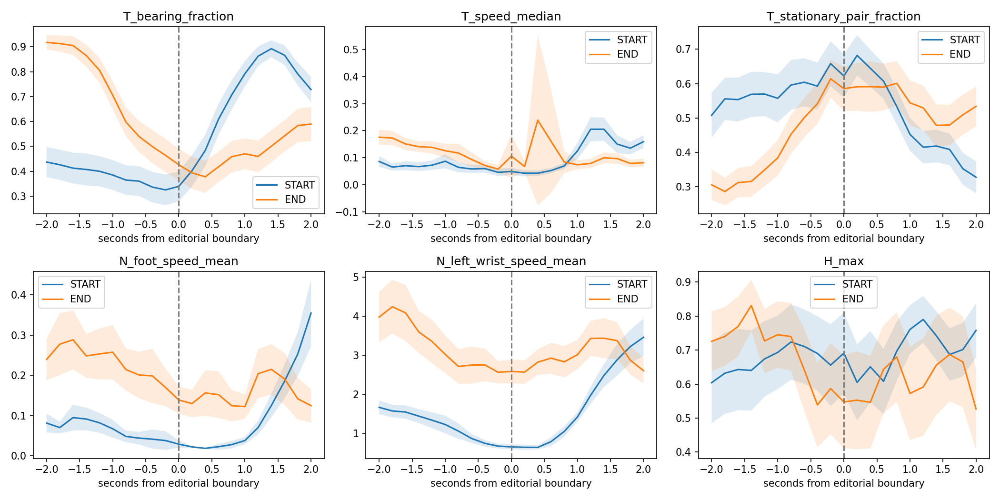

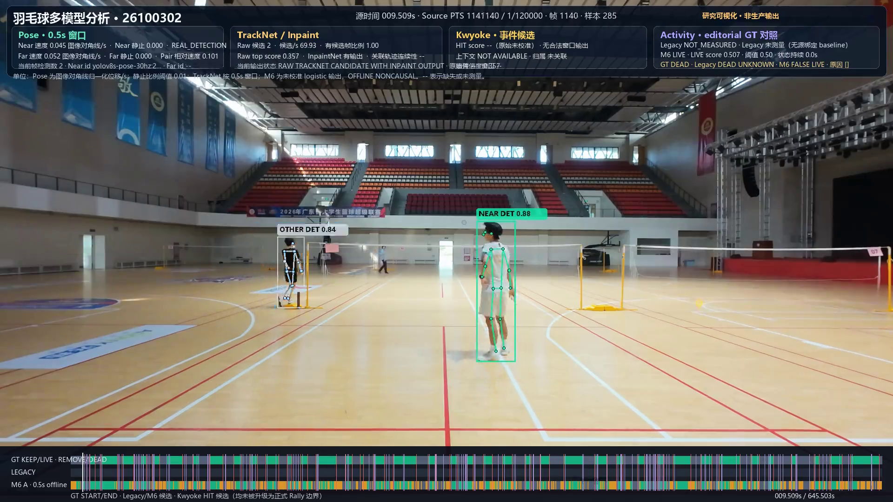

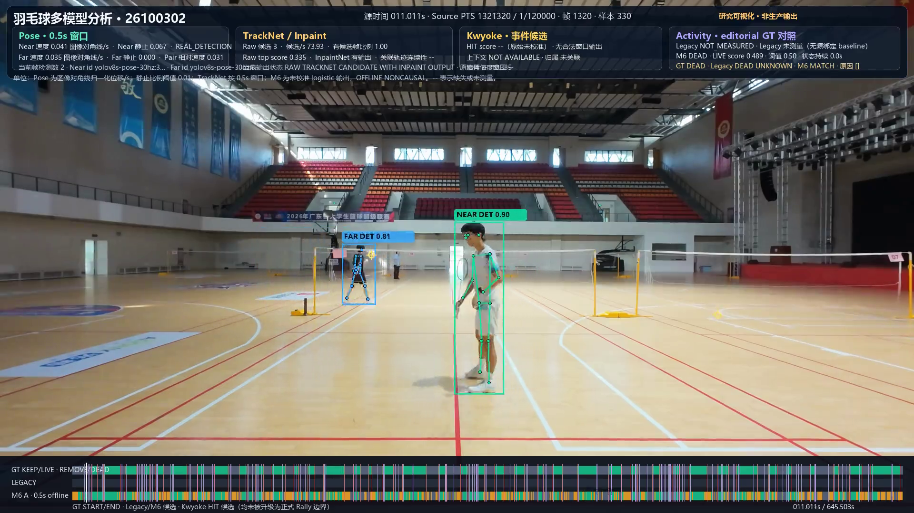
EVIDENCE TYPE E · EXPERIMENTS
Model performance and measured ablations
Both images come from actual report figures; their metrics and cohorts are not interchangeable.
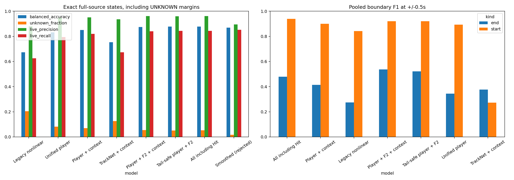
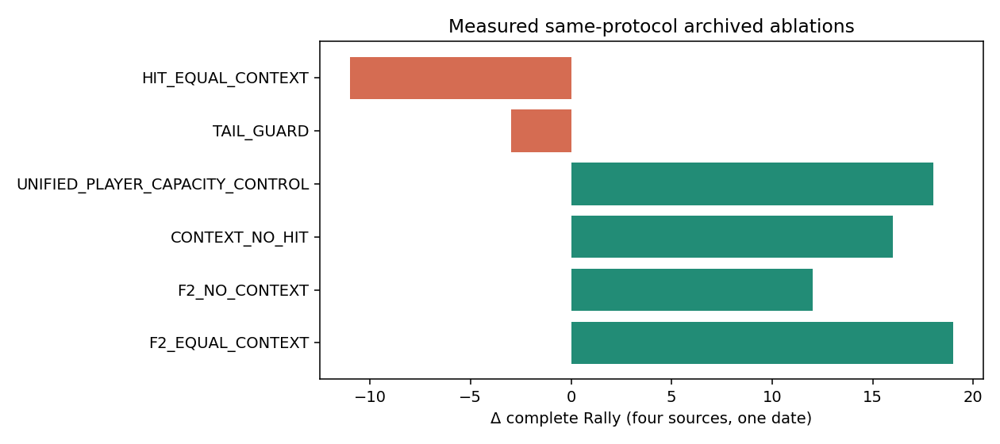
FAILURE ANALYSIS
Failure Analysis: false LIVE, missing slots, and UNKNOWN at the source tail
Failures are kept visible and labeled with their editorial GT and frozen prediction state.

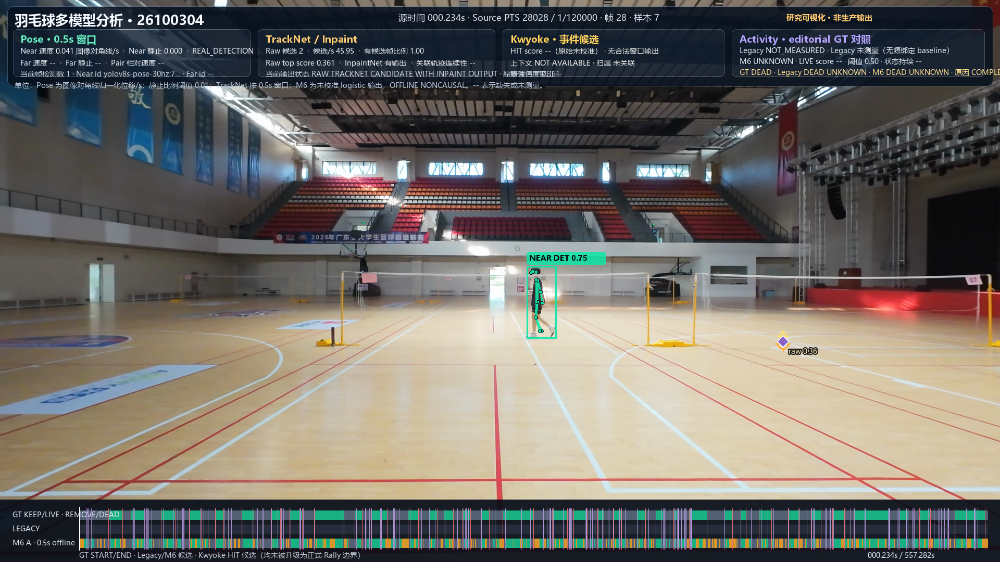

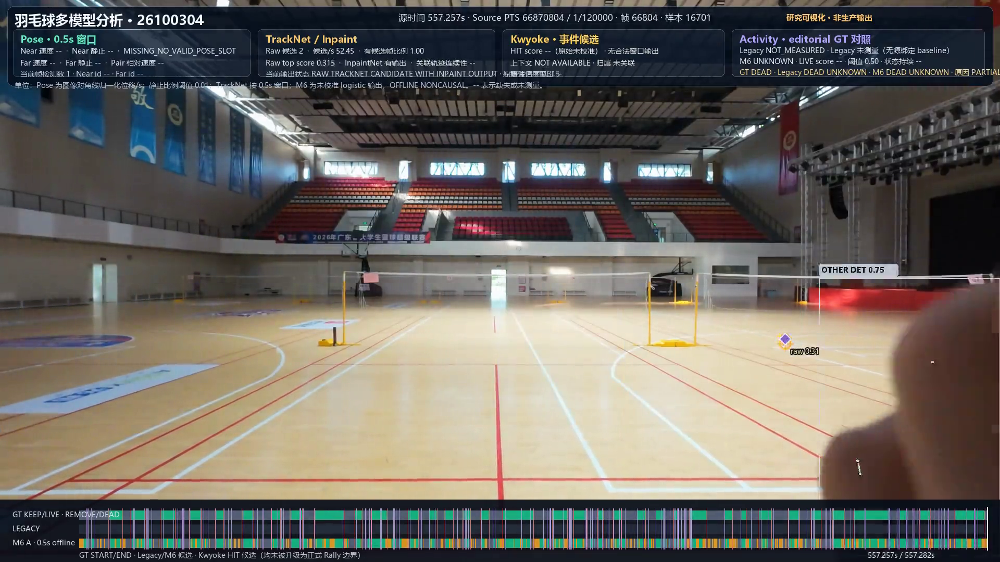
The separate 26100303 raw-candidate frame shows another failure: editorial GT DEAD with M6 FALSE LIVE.
PROVENANCE
Methods and Provenance
- Original self-contained research report — report figures and full experiment context.
- Methods and evaluation scope — exact metrics, model arms, GT meaning, and production boundary.
- Reproducibility and provenance — what was reused and what is withheld.
- Evidence manifest — per-image source, time/PTS, model/stage, experiment status, and limitations.
This gallery contains selected still images and original report figures. It does not host videos, raw caches, model weights, annotation files, personal identities, or local runtime services.